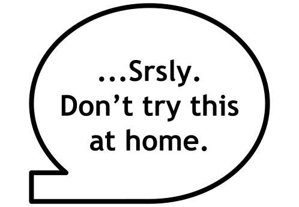
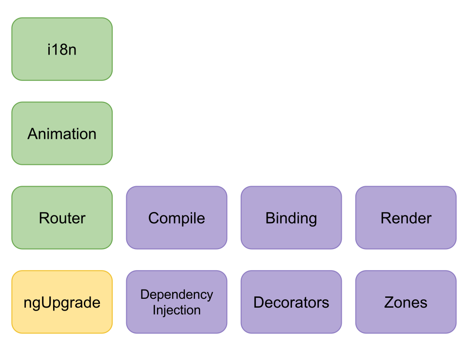
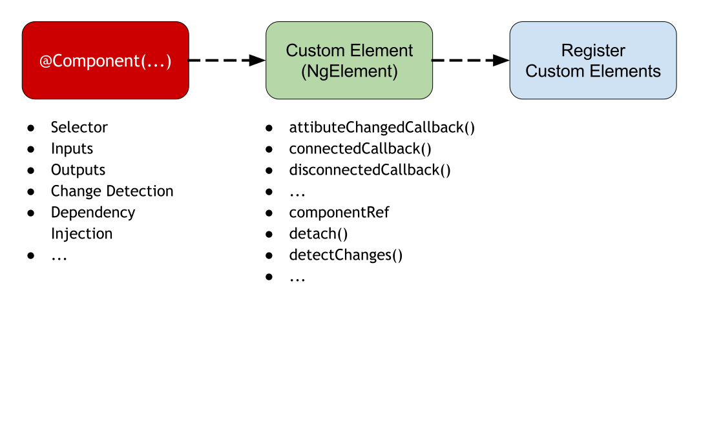

Angular Elements

Pascal Precht
@PascalPrecht
GDE for the Angular Team

@MachineLabs_AI

"Angular is ideal for building complete applications, and our tooling, documentation and infrastructure are primarily aimed at this case."
Rob Wormald, Angular Team™
"Angular is ideal for building complete applications, and our tooling, documentation and infrastructure are primarily aimed at this case."
Rob Wormald, Angular Team™

"...but it's quite challenging to use in scenarios that don't fit that specific Single Page Application model."
Rob Wormald, Angular Team™
Various use cases
- Reusability - Reuse components across teams and projects
- CMS Pages - Embed standalone apps in CMS powered websites
- Widgets - Use Angular components in other environments
- ...
What if...
Web Components
Web Components
- Templates - Templates in HTML
- HTML Imports - Imports in HTML
- Shadow DOM - DOM and Style Encapsuation
- Custom Elements - Extend the browser vocabulary!
Web Components
- Templates - Templates in HTML
- HTML Imports - Imports in HTML
- Shadow DOM - DOM and Style Encapsuation
- Custom Elements - Extend the browser vocabulary!
Templates
<template>
<p>This is a template!</p>
</template>
Declared using <template> and can be instantiated later at runtime.
Web Components
- Templates - Templates in HTML
- HTML Imports - Imports in HTML
- Shadow DOM - DOM and Style Encapsuation
- Custom Elements - Extend the browser vocabulary!
Web Components
- Templates - Templates in HTML
- HTML Imports - Imports in HTML
- Shadow DOM - DOM and Style Encapsuation
- Custom Elements - Extend the browser vocabulary!
Web Components
- Templates - Templates in HTML
HTML Imports - Imports in HTML- Shadow DOM - DOM and Style Encapsuation
- Custom Elements - Extend the browser vocabulary!
Web Components
- Templates - Templates in HTML
HTML Imports - Imports in HTML- Shadow DOM - DOM and Style Encapsuation
- Custom Elements - Extend the browser vocabulary!
Shadow DOM
<input type="date">
<#shadow-root>
<div>
...
</div>
</shadow-root>
Enables style and DOM encapsulation within a DOM element.
Web Components
- Templates - Templates in HTML
HTML Imports - Imports in HTML- Shadow DOM - DOM and Style Encapsuation
- Custom Elements - Extend the browser vocabulary!
Web Components
- Templates - Templates in HTML
HTML Imports - Imports in HTML- Shadow DOM - DOM and Style Encapsuation
- Custom Elements - Extend the browser vocabulary!
Web Components
- Templates - Templates in HTML
HTML Imports - Imports in HTML- Shadow DOM - DOM and Style Encapsuation
- Custom Elements - Extend the browser vocabulary!
<loading-spinner></loading-spinner>
Custom Elements
Custom elements share the same API surface as native DOM objects:
- Attributes
- Properties
- Methods
- Events
Defining Custom Elements
class LoadingSpinner extends HTMLElement {
...
}
customElements.define('loading-spinner', LoadingSpinner);
Custom elements are HTMLUnknownElement until upgraded.
Attributes
class LoadingSpinner extends HTMLElement {
static get observedAttributes() {
return ['mode'];
}
attributeChangedCallback(name, oldValue, newValue) {
if (name === 'mode') {
// do something with newValue
}
}
}
<loading-spinner mode="indeterminate"></loading-spinner>
Properties
class LoadingSpinner extends HTMLElement {
...
get mode() {
return this.getAttribute('mode');
}
set mode(val) {
this.setAttribute('mode', val);
}
}
let spinner = document.querySelector('loading-spinner');
spinner.mode = 'indeterminate';
Custom Events
class LoadingSpinner extends HTMLElement {
...
emitModeChange() {
let modeChangeEvent = new CustomEvent('mode-change', {
detail: this.mode
});
this.dispatchEvent(modeChangeEvent);
}
}
let spinner = document.querySelector('loading-spinner');
spinner.addEventListener('mode-change', event => { ... });
Reactions
Run code during interesting times of existence.
- constructor() - Instance creation
- connectedCallback() - Inserted into DOM
- disconnectedCallback() - Removed from DOM
- attributeChangedCallback() - Attribute changed
Custom Elements inside Angular
<loading-spinner
[mode]="mode"
[attr.mode]="mode"
(modeChange)="doSomething($event)"
[value]="progress">
</loading-spinner>
thumb_up Angular has been designed for this.
NG → CE
In fact, Angular and Custom Elements seem quite similar...
@HostBinding() |
→ | Attributes |
@Input() |
→ | Properties |
@Output() |
→ | CustomEvent() |
| Lifecycle Hooks | → | Reactions |
What if... →
→ 
Others do it too!
Angular Components packaged as Custom Elements.*
* kinda like Custom Elements on steroids; designed to work outside Angular appsHow it works
How it works
How it works
How it works
Done by Angular
=)
In a nutshell
- Self-bootstrapping
viaconnectedCallback() - Hosts Angular Component inside Custom Element
- Bridges DOM APIs and Angular APIs
"Angular Component on the inside, Standards on the outside."
Rob Wormald, Angular Team™
Angular Elements in Code
// app.module.ts
import { HelloWorldComponent } from './hello-world';
export const CEComponents = [HelloWorldComponent];
@NgModule({
imports: [BrowserModule],
declarations: CEComponents,
entryComponents: CEComponents
})
export class CustomElementsModule {
ngDoBootstrap() {} // required in bootstrap module
}
Angular Elements in Code
// main.ts
import { registerAsCustomElements } from '@angular/elements';
import { CEComponents, CustomElementsModule } from './app';
registerAsCustomElements(CEComponents, () => {
return platformBrowserDynamic()
.bootstrapModule(CustomElementsModule);
}) .then(_ => {
// application code goes here
}).catch(onError);
thumb_up Works in AoT as well!
Conclusion
- Makes your components usable everywhere
- Might become standalone component model for Angular
- Some things still need to be figured out (packaging, dependency management etc.)
Credits
-
Georgios Kalpakas
-
Rob Wormald
Thanks for your help!
Links to Demos
Thank you.
Pascal Precht
@PascalPrecht